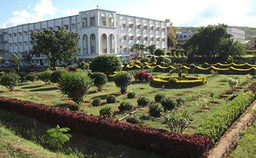

Campus Facilities

MITS provides modern facilities to support academic learning, research and student activities.
Facilities Available
Laboratories
Modern laboratories provide students with practical learning and hands-on experience.
Library
Library facilities support students with academic resources and learning materials.
Classrooms
Classrooms provide a comfortable environment for teaching and collaborative learning.
Computer Facilities
Computer facilities support programming, technical learning and academic activities.
Sports
Sports facilities encourage students to participate in physical and recreational activities.
Student Support
Various student-support facilities help students with their academic and campus activities.